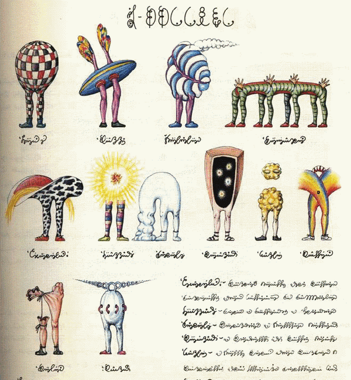

I'm a biologist interested in evolution and complex systems.
See my work

Evolution of gene expression noise in gene regulatory networks
Expression noise is the variability of gene expression level, present eveng among isogenic cells grown in
identical conditions. It's an inevitable consequence of the stochasticity of diffusion and binding of the
molecular players involved in transcription and translation. It was shown that expression noise is an evolvable
trait and that the position of the gene in gene networks affects its expression noise level. To study the impact
of the gene network topology on the evolution of gene-specific expression noise, we develop a gene regulatory
network model with expression noise and use it to simulate the evolution of expression noise in populations of
model gene networks.
Evolution of gene expression noise in fluctuating environments
Changing environments can lead to the development of adaptive strategies such as bet-hedging,
in which long-term fitness of a genotype is increased at the cost of increasing the variance of
fitness of individual organisms. One way to implement bet-hedging is to increase the gene expression noise
of a gene that is involved in environmental response. However, the expression noise of a gene depends on its
intrinsic expression noise and its position in the gene network. Therefore, a gene network can adapt at the
network level to fluctuating environments. We are exploring this hypothesis using evolutionary forward-in-time
simulations, in which we simulate the evolution of populations of model gene regulatory networks under selective
and nonselective conditions.
Inference of recombination maps from a single pair of genomes and its application to ancient samples
Gustavo V. Barroso, Nataša Puzović, Julien Y. Dutheil
Recommended citation: V. Barroso G, Puzović N, Dutheil JY (2019)
Inference of recombination maps from a single pair of genomes and its application to ancient samples.
PLOS Genetics 15(11): e1008449.
https://doi.org/10.1371/journal.pgen.1008449
PDF here
The evolution of gene-specific transcriptional noise is driven by selection at the pathway level
Gustavo Valadares Barroso, Natasa Puzovic, Julien Y Dutheil
Recommended citation: Gustavo Valadares Barroso, Natasa Puzovic, Julien Y Dutheil,
The Evolution of Gene-Specific Transcriptional Noise Is Driven by Selection at the Pathway Level,
Genetics, Volume 208, Issue 1, 1 January 2018,
Pages 173–189,
https://doi.org/10.1534/genetics.117.300467
PDF here
Talks
Aquavit 2022
Max Planck Institute for Evolutionary Biology, Plön
Oral presentation: "Selection at the regulatory network level leads to differential selective pressure on
intrinsic gene expression noise"
Plön, 08-09 June 2022
55th Annual Population Genetics Group Meeting (PopGroup55)
Population Genetics Group UK
Oral presentation: "Make all the right noises: the effect of gene network structure on the evolution of
gene expression noise in fluctuating environments"
Virtual, 05-07 January 2022
Recording (10min talk)
International Max Planck Research School for Evolutionary Biology Retreat 2021
International Max Planck Research School for Evolutionary Biology
Oral presentation: "Noisy neighbours will be reported - how gene network topology
affects the evolution of gene-specific expression noise"
Kiel, Germany, 16-17 September 2021
Aquavit 2021
Max Planck Institute for Evolutionary Biology, Plön
Oral presentation: "The impact of gene network topology on the evolution of gene-specific expression noise"
Virtual, 17-18 June 2021
Interdisciplinary Approach to Molecular Evolution 2020
Approche Interdisciplinaire de l'Evolution Moléculaire (AIEM) 2020
Oral presentation: "The impact of gene network topology on the evolution of gene-specific expression noise"
Virtual, 15-17 December 2020
Society for Molecular Biology & Evolution Annual Meeting 2019
Society for Molecular Biology and Evolution
Oral presentation: "The impact of gene network topology on the evolution of gene-specific expression noise"
Session: Evolution of Proteins and Molecular Pathways/Networks under Higher Level Selective Effects
Manchester, United Kingdom 21-15 July 2019
Poster presentations
Evolutionary Systems Biology 2022
Wellcome Genome Campus, UK
Poster presentation: "Noisy neighbours will be reported: how gene network topology affects the evolution
of gene-specific expression noise"
Virtual, 09-11 February 2022
Society for Molecular Biology & Evolution Annual Meeting 2021
Society for Molecular Biology and Evolution
Poster presentation: "The impact of gene network topology on the evolution of gene-specific expression noise"
Virtual, 03-08 July 2021
CSHL Probabilistic Models in Genomics 2021
Cold Spring Harbor Laboratory
Poster presentation: "The impact of gene network topology on the evolution of gene-specific expression noise"
Virtual, 14-16 April 2021
CSHL Network Biology Meeting 2021
Cold Spring Harbor Laboratory
Poster presentation: "The impact of gene network topology on the evolution of gene-specific expression noise"
Virtual, 16-19 March 2021
Aquavit 2020
Max Planck Institute for Evolutionary Biology, Plön
Poster presentation: "The impact of gene network topology on the evolution of gene-specific expression noise"
Virtual, 15-17 December 2020
V. Barroso G, Puzović N, Dutheil JY (2019)
Inference of recombination maps from a single pair of genomes and its application to ancient samples.
PLOS Genetics 15(11): e1008449.
https://doi.org/10.1371/journal.pgen.1008449
Gustavo Valadares Barroso, Natasa Puzovic, Julien Y Dutheil,
The Evolution of Gene-Specific Transcriptional Noise Is Driven by Selection at the Pathway Level,
Genetics, Volume 208, Issue 1, 1 January 2018,
Pages 173–189, https://doi.org/10.1534/genetics.117.300467
Conferences
International Max Planck Research School for Evolutionary Biology Retreat, oral presentation
Kiel, Germany, 16-17 Sep 2021
Society for Molecular Biology & Evolution Annual Meeting (SMBE), virtual poster presentation
Society for Molecular Biology & Evolution, 03-08 Jul 2021
Aquavit 2021, virtual poster presentation
Max Planck Institute for Evolutionary Biology, Plön, Germany, 17-18 Jun 2021
CSHL Probabilistic Modeling in Genomics, virtual poster presentation
Cold Spring Harbor Laboratory, New York, USA, 14-16 Apr 2021
CSHL Network Biology Meeting, virtual poster presentation
Cold Spring Harbor Laboratory, New York, USA, 16-19 Mar 2021
Interdisciplinary Approach to Molecular Evolution, virtual poster presentation
CNRS, France, 15-17 Dec 2020
Aquavit 2020, virtual poster presentation
Max Planck Institute for Evolutionary Biology, Plön, Germany, Jun 2020
Society for Molecular Biology & Evolution Annual Meeting (SMBE), oral presentation
Society for Molecular Biology & Evolution, Manchester, United Kingdom, 21-15 Jul 2019
Research Experience
Genomic Microbiology Group, PhD rotation (2019)
Institute of General Microbiology, Kiel University, Kiel
Stochastic Evolutionary Dynamics Research Group, PhD rotation (2019)
Department of Evolutionary Theory, Max Planck Institute for Evolutionary Biology, Plön
Molecular Systems Evolution Research Group, Master's thesis project (2019)
Department of Evolutionary Genetics, Max Planck Institute for Evolutionary Biology, Plön
Laboratoire Matière et Systèmes Complexes (Laboratory for Matter and Complex Systems), internship (2018)
UMR 7057 CNRS, Université Paris 7 Diderot, Université Sorbonne Paris Cité
Tautz Research Group, Internship (2018)
Department of Evolutionary Genetics, Max Planck Institute for Evolutionary Biology, Plön
Molecular Systems Evolution Research Group, Research Assistant (2017)
Department of Evolutionary Genetics, Max Planck Institute for Evolutionary Biology, Plön
Molecular Systems Evolution Research Group, Internship (2015, 2016)
Department of Evolutionary Genetics, Max Planck Institute for Evolutionary Biology, Plön
Supervision Experience
Nikhil Sharma, IMPRS PhD rotation (2020)
Tanvi Madaan, undergraduate internship (2020)
Awards, Fellowships, Certificates
ERASMUS+ Internship Scholarship, granted by ERASMUS+ of European Union (2018)
CPE (Certificate of Proficiency in English), University of Cambridge ESOL Examinations (2012)
Fellowship of the City of Belgrade, granted by the City Administation of Belgrade (2010, 2011)
Skills
Computational skills: R, C++, MATLAB, Python
Bioinformatic software: MAFFT, iqtree, snakemake
Other software: Inkscape, Latex
Spoken languages: English (proficient), German (basic), Serbian-Croatian-Bosnian-Montenegrin (native)